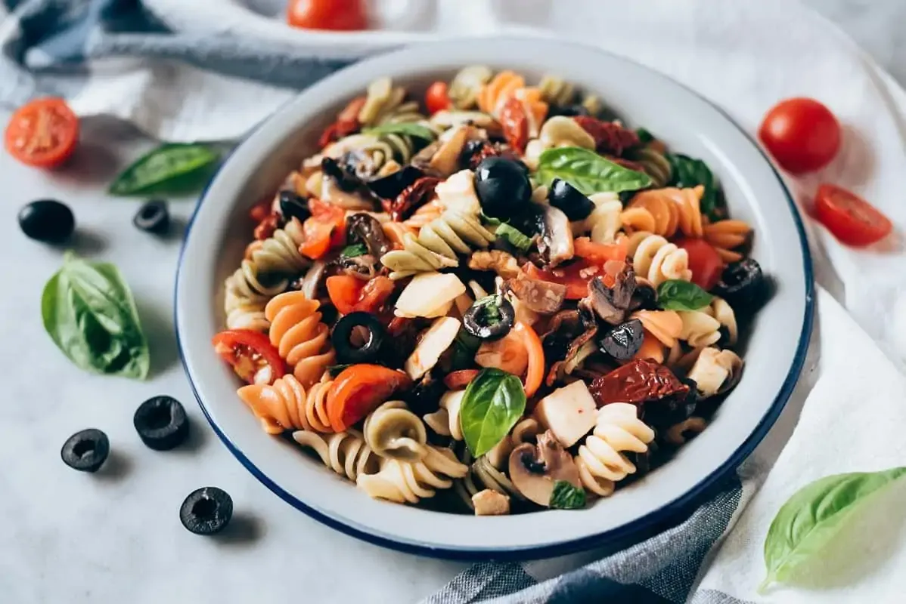

Ensalada de Pasta Fria Saludable
Ingredientes
250 g de pasta seca
200g de champiñones
1 cucharada de aceite de oliva virgen extra
150 g de tomates cherry
70g-80g de tomates secos
80g de aceitunas negras sin hueso
125g de mozarella fresca
50g de queso Grana Padano
80-90g de nueces
1 puñado de hojas de albahaca frescas
Aceite de oliva virgen extra
Vinagre de manzana
